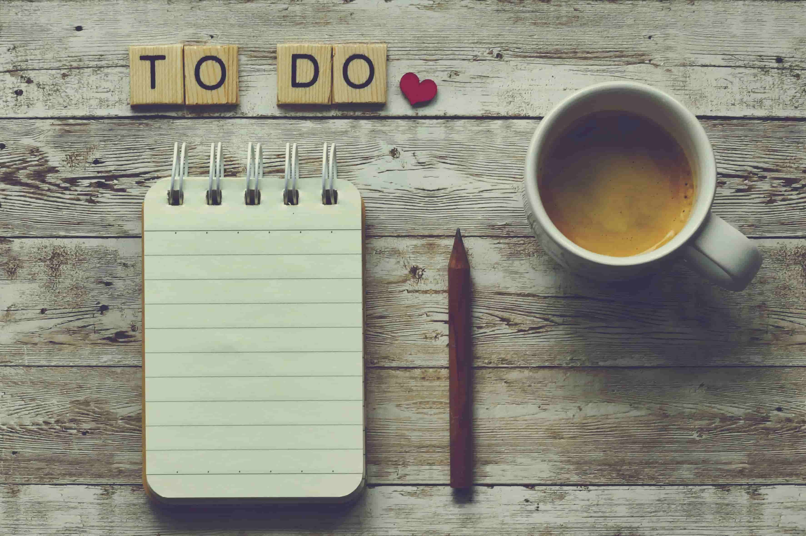

Mi semana tipo ViveConUve: cómo encajo comida, pasos, fuerza y descanso sin volverme loco

Cuando ves un “antes y después” es fácil imaginar una vida perfecta: horarios milimétricos, semanas clonadas y disciplina digna de documental.
En este post te enseño mi semana tipo ViveConUve: cómo organizo comida, pasos, entrenamiento de fuerza, descanso y NEAT para que todo encaje sin que se me vaya la cabeza.
La mía no es así de perfecta. Tengo semanas con conciertos, actos, mañanas de ensayo, cambios de última hora… No hay dos iguales. Aun así, he conseguido encajar comida, pasos, fuerza y descanso de una forma que puedo sostener sin convertirme en un monje con smartwatch.
Este post va de eso:
- De cómo se ve una semana tipo ViveConUve por dentro.
- De qué cosas son intocables y cuáles bailan.
- Y de cómo meto ciencia, sentido común y un poco de humor para que esto no sea otra “rutina perfecta” que dura tres días.
No es una semana perfecta. Es una semana vivible. Y esa es la gracia.
Las tres anclas de mi semana (aunque el calendario vaya a su bola)
Como mi agenda se mueve, asumí algo importante:
No puedo controlar todos los horarios, pero sí puedo decidir qué no negocio casi nunca.
Hoy mi semana se sostiene en tres anclas.
1. Fuerza a las 7:45: empezar el día de cara
Entre semana, mi entrenamiento de fuerza tiene hora fija: 7:45.
Ahí hago mi circuito de fuerza. No voy a darte aquí la tabla entera, pero sí algo clave: los ejercicios cambian de un día a otro, así que ninguna sesión es igual. Eso hace que:
- No me aburra.
- Trabaje todo el cuerpo a lo largo de la semana.
- Cada mañana sea un pequeño reto que quiero completar, no un castigo.
Es mi forma de empezar el día de cara, con energía y con la sensación de que, pase lo que pase después, ya he hecho algo importante por mi cuerpo.
2. Ventanas de comida que no me castigan
Aquí no hago magia, hago elecciones.
En época de ayuno intermitente, entreno en ayunas y rompo el ayuno con el desayuno justo después de la fuerza. Es un momento que disfruto muchísimo: noto cómo me recargo, física y mentalmente, y me ayuda a asociar el esfuerzo de la sesión con una recompensa que me sienta bien. Esos días, lo que desaparece es la cena.
Cuando no estoy en fase de ayuno, la estructura es más clásica, pero con una línea roja: ceno muy pronto y ligero, de forma que, sumando las horas de sueño, salga alrededor de 12 horas sin comer sin obsesionarme.
Si quieres ver cómo he afinado ese equilibrio (pros, contras y precauciones), lo cuento en detalle en el post Ayuno intermitente sin volverme loco .
3. Noches que protejo como si fueran un concierto
No todas, pero sí varias noches por semana tienen un cartel imaginario de:
“Hoy no se negocia: ni cenas pesadas tardías, ni maratón de pantallas”.
Las recomendaciones oficiales de actividad física del Ministerio de Sanidad ponen en la misma frase actividad regular, alimentación ajustada y descanso suficiente: hablan de acumular al menos 150 minutos de actividad física moderada a la semana, repartidos en varios días, y lo ligan a un buen descanso para que el cuerpo pueda responder [1].
Yo he decidido que el sueño no es un “ya si eso”, sino otro pilar más de la semana, al nivel de la fuerza y del movimiento.
El NEAT: el gasto invisible que vive pegado a mi semana
Aquí entra un concepto que tengo muy presente en ViveConUve y que casi nadie aprovecha de verdad: el NEAT.
El NEAT (Non-Exercise Activity Thermogenesis) es la termogénesis por actividad sin ejercicio: todas las calorías que gastas con cosas que no son entrenamiento formal ni ir al gimnasio. Caminas, subes escaleras, haces la compra, recoges la casa, vas de un aula a otra, te mueves mientras hablas por teléfono… todo eso suma [2].
La parte curiosa es que:
- El NEAT puede representar una fracción importante del gasto calórico diario.
- Y se puede aumentar sin añadir ni una sola “rutina oficial” más.
¿Cómo lo aplico yo en mi semana?
- Ascensor fuera siempre que pueda: escaleras para arriba y para abajo.
- Si en casa tengo dos baños, voy al de arriba para obligarme a subir y bajar.
- Intento ir caminando a todos los sitios posibles, aunque me suponga 10 minutos más.
- En lugar de sentarme siempre que tengo un rato, me quedo de pie o doy una vuelta corta mientras pienso o hablo.
No parece gran cosa, pero es justo lo que subraya la literatura sobre NEAT: ese movimiento “de relleno” marca diferencias a medio plazo en gasto calórico y salud metabólica, sobre todo si lo sumas día tras día.
Fuerza + comida con cabeza + descanso + NEAT es, para mí, la fórmula realista. Lo demás son pósters motivacionales.
Un día “bueno” de mi semana tipo ViveConUve
Vamos con un ejemplo realista, no de anuncio.
Mañana: fuerza, desayuno y ensayos
07:45 – Fuerza.
Sesión de circuito. Me activa, me centra y me recuerda que el día
no manda sobre mí desde el minuto cero.
Después – Desayuno.
Entreno, desayuno y sigo.
Si estoy en fase de ayuno intermitente, ese desayuno es el momento en que rompo el ayuno:
lo disfruto y noto claramente cómo me recarga para el resto de la mañana.
Resto de la mañana – Ensayos, trabajo, recados.
Aquí entra mi vida musical y laboral: ensayos, actos, gestiones…
Aprovecho para activar el NEAT: ir andando siempre que puedo, evitar el ascensor,
convertir los trayectos cortos en mini paseos.
Mediodía: comer sin firmar la siesta obligatoria
La misión de la comida es sencilla: no dinamitar la tarde.
Plato razonable: verdura, algo de proteína y carbohidrato ajustado, sin entrar en guerra con el hambre ni con la modorra. Si puedo, camino unos minutos después de comer. No hace falta una caminata épica; diez minutos ya cambian cómo sienta la digestión y cómo llego a la tarde.
Tarde: menos sofá, más proyecto
Las tardes, cada vez más, son territorio ViveConUve:
- Escribir, pulir o ampliar posts.
- Aprender cosas nuevas (web, IA, contenidos…) que luego aplico al proyecto.
- Revisar ideas, estructura, próximos pasos.
Claro que hay días en los que el cuerpo pide sofá, pero una cosa es descansar y otra desaparecer. La diferencia ahora es que, si me voy al sofá, intento que sea para descansar de verdad, no para perderme durante horas en scroll infinito.
Noche: no sabotear al día siguiente
Aquí es donde me juego buena parte del “Wenceslao de mañana”.
En fases de ayuno intermitente, no ceno y dejo que la noche forme parte de la ventana sin comida. Fuera de esas fases, ceno pronto y ligero para encadenar unas 12 horas sin comer aprovechando el sueño.
Intento (cada vez con más éxito):
- Bajar luz y pantallas un rato antes de dormir.
- No arrancar “un último vídeo” que nunca es el último.
- Hacer algo que me baje revoluciones: leer algo sencillo, pensar en el día siguiente, respirar un poco.
Dormir bien no es el premio del día perfecto; es el combustible para que el día siguiente no se te haga cuesta arriba desde el café.
Un día “de andar por casa” (cuando el plan se descuadra)
También existen. Y son importantes.
Un día de “andar por casa” puede ser algo así:
- Noche peor de lo esperado.
- Mañana con cambios o imprevistos.
- Horarios que se mueven y planes que vuelan.
La diferencia con el “yo de antes” es esta:
- La sesión de fuerza no se toca.
- Lo que se puede caer es la salida larga para caminar o trotar si la mañana se ha ido al traste.
Ese día tendré menos pasos, quizás una comida menos afinada o más cansancio. Pero ya no hago lo de: “hoy ya está todo perdido, aprovecho y lo remato”.
Si consigo:
- Mantener la fuerza.
- Moverme algo (aunque sea vía NEAT: escaleras, paseos cortos, recados andando).
- Y no destrozar la noche…
…la semana sigue viva. No será de 10, pero tampoco es un suspenso.
Semanas distintas, mismos mínimos
Con conciertos, ensayos, compromisos y vida, mis semanas se parecen más a un Tetris que a un Excel bonito.
Por eso trabajo con mínimos semanales, no con perfección diaria:
- Fuerza: esas mañanas de 7:45 son el esqueleto de la semana.
- Movimiento: varios días con un volumen decente de pasos (entre caminatas y NEAT).
- Comida: jugar con etapas de ayuno o con cenas tempranas, pero sin volver a la anarquía.
- Descanso: unas cuantas noches protegidas donde no negocio ni pantallas ni cenas pesadas tardías.
En el portal “Estilos de vida saludable” del Ministerio de Sanidad, en el recurso «Haz tu propio plan», proponen exactamente eso: no imaginar “la semana perfecta”, sino diseñar un calendario semanal realista, marcando qué tipo de actividad vas a hacer cada día y cuándo, adaptado a tu vida concreta [2].
Yo he extendido esa lógica a todo: fuerza, pasos, comida, descanso y NEAT.
Si quisieras diseñar tu propia semana tipo (sin copiar la mía)
No necesitas mis horarios ni mi trabajo. Lo que necesitas es mirar los tuyos con honestidad.
Te propongo un ejercicio sencillo:
1. Dibuja tu semana real
De lunes a domingo, marca:
- Lo que es fijo (trabajo, familia, desplazamientos).
- Lo que suele pasar (pantallas, horarios de comidas, horas de sueño).
2. Elige tus 3 anclas
No más. Tres.
- Quizá sea un horario concreto de fuerza.
- O dos franjas del día en las que sí o sí vas a caminar.
- O tres noches a la semana donde decides a qué hora cierras el chiringuito.
3. Define un experimento de una semana
No una nueva vida. Una semana.
- “Esta semana, la sesión de fuerza de tal día no se toca”.
- “Esta semana, ceno antes de tal hora cuatro días”.
- “Esta semana, no uso el ascensor y hago todos los recados cercanos andando”.
Ese enfoque es, en el fondo, lo que hay detrás del Método UVE (Ubica, Verifica, Experimenta), que explico con calma en el post Método UVE: Ubica, Verifica y Experimenta tu cambio real : ver dónde estás, probar cambios pequeños, observar qué pasa y ajustar sin dramas.
No necesitas una vida perfecta para tener una semana que te cuide. Necesitas unas cuantas decisiones claras que puedas repetir, incluso cuando todo lo demás se mueva.
Eso, para mí, es ViveConUve: menos ruido, más intención… y semanas que, sin ser de película, sí te acercan a la vida que quieres vivir.
Notas
- Ministerio de Sanidad. Haz tu propio plan, recurso del portal «Estilos de vida saludable» donde se propone elaborar un calendario semanal de actividad física adaptado a cada persona. Disponible en: estilosdevidasaludable.sanidad.gob.es .
- MGC Mutua. «¿Cuántas calorías se queman caminando?». Artículo divulgativo donde se explica la Termogénesis por Actividad sin Ejercicio (NEAT) y cómo el movimiento cotidiano (caminar, tareas domésticas, etc.) contribuye al gasto energético diario. Disponible en: mgc.es .